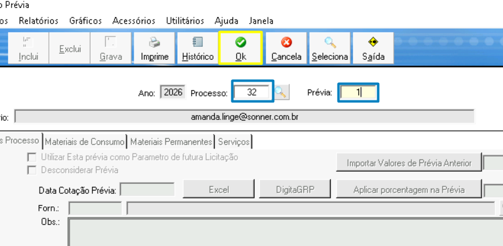
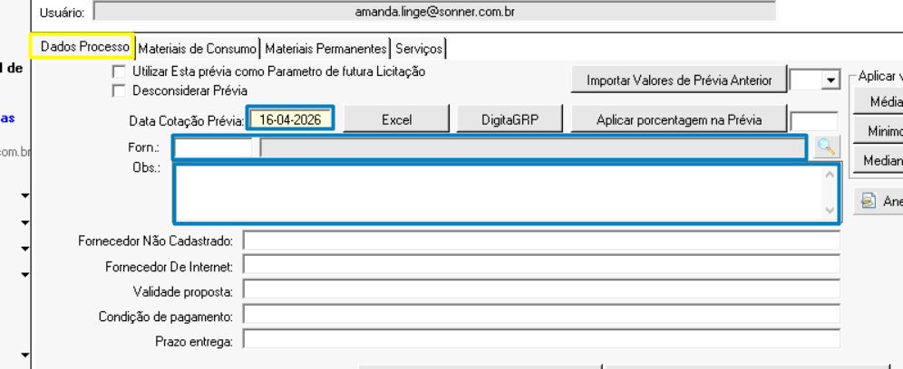
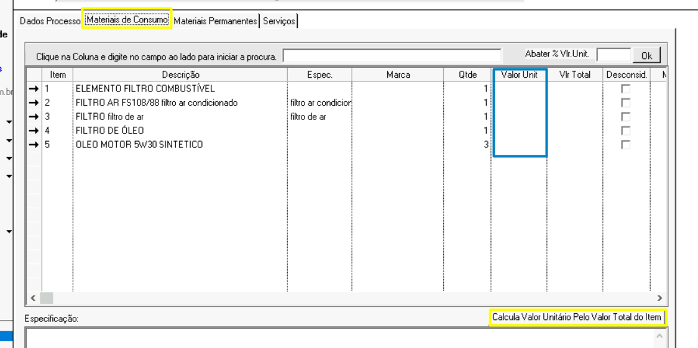
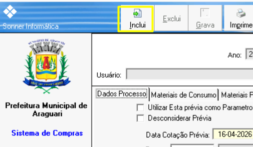
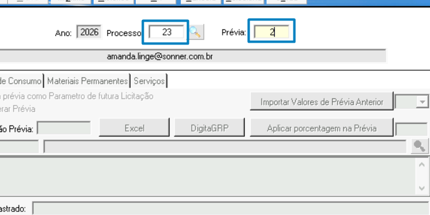

Passo 1
Acesse o sistema de compras desktop

Passo 2
Acesse a tela de cotações: Movimentos > processos > cotação prévia

Passo 3
Preencha os campos: processo e número da prévia. Clique em "Ok"

Passo 4
Na aba "Dados processo", preencha os campos:

Passo 5
Dependendo do tipo de processo, você irá abrir uma aba diferente para cadastrar os valores ("materiais de consumo", "materiais permanentes" e "serviço").Neste processo de exemplo é material de consumo. Iremos digitar os calores unitários e clicar no botão "Calcular valor unitário pelo valor total do item"

Passo 6
Após veriricar se os valores estão corretos, clique em "Incluir" para salvar no sistema

Passo 7
Caso precise cadastrar uma nova cotação, coloque o número do processo e o número da nova prévia
